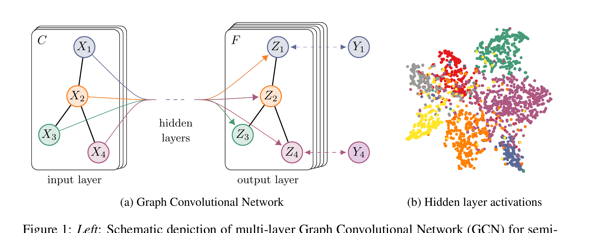
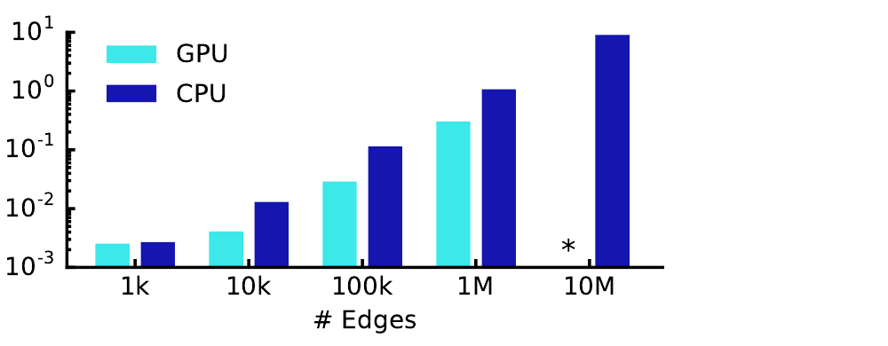
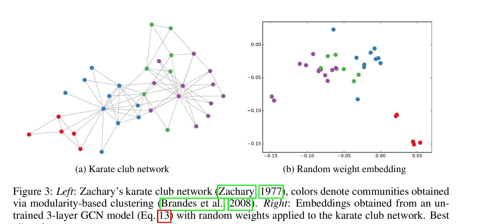
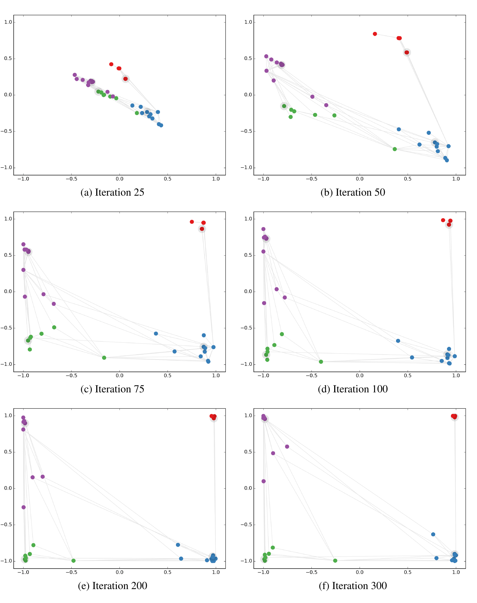
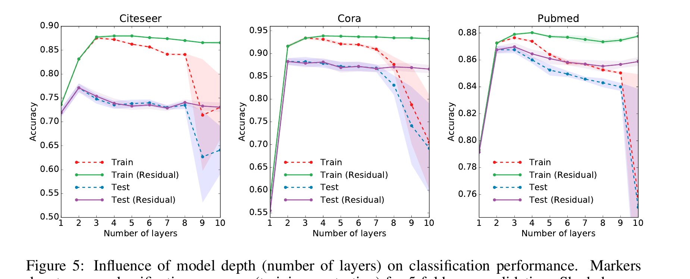

Baseline: row-wise MLP
. Each row is transformed independently. Reordering the edges while keeping X fixed changes nothing, because the MLP never receives A.
Graph machine learning · 60-minute active lesson
A Graph Convolutional Network turns a fixed topology into a trainable local conversation. Adjacency chooses the speakers, degree normalization sets their volume, shared weights interpret the mixture, and a few known labels teach the rule for every node.
↔ Swipe horizontally to read the full topology-to-prediction diagram.
1 · Problem and prerequisite bridge
The task is node classification on a graph. In a citation network, node i is a document, row Xi is its sparse bag-of-words feature vector, and an edge records a citation link that the paper preprocesses as undirected. Every document has a topic, but training reveals only a small subset of those labels.
. Each row is transformed independently. Reordering the edges while keeping X fixed changes nothing, because the MLP never receives A.
. The normalized adjacency  first mixes rows along edges; the shared matrix W then interprets each mixed row.
Predict before reveal
A paper has ambiguous words but links mainly to machine-learning papers. If its own feature row stays fixed, can changing only its edges change an MLP prediction? Can it change a GCN prediction?
The MLP prediction cannot change because it never sees the adjacency. The GCN prediction can change because multiplying by  changes which feature rows enter the paper’s representation. That can help on a homophilous graph, but misleading neighbours can also hurt.
2 · Actors, symbols, and shapes
The paper’s layer is compact because one expression hides four different roles: topology, signal, learned parameters, and activation. Keep those roles separate.
↔ Swipe horizontally to inspect every table column.
| Actor | Shape | Fixed or learned? | Job |
|---|---|---|---|
| A | N × N | Fixed graph input | Binary or weighted adjacency: which node pairs are connected. |
| N × F0 | Fixed node input | One feature row per node. | |
| N × N | Derived from A | Adds one self-connection per node. | |
| D̃ | N × N, diagonal | Derived from à | D̃ii is node i’s degree after adding self-loops. |
| N × N | Derived operator | Scales edge i ← j by . | |
| N × Fl | Computed activations | Current representation of every node at layer l. | |
| Fl × Fl+1 | Learned, shared | Transforms mixed features identically at every node. | |
| Z | N × C | Computed output | One row of class probabilities per node. |
| YL | |L| × C | Observed targets | Labels only for node indices in labelled set L. |
à = A + I lets the node’s current row speak alongside its neighbours.
Symmetric degree factors prevent high-degree structure from dominating scale.
ÂH collects only graph-local signals.
W mixes feature channels; σ makes stacked layers nonlinear.
↔ Swipe horizontally to follow all four mechanism stages.
3 · Trace A: adjacency and normalization
Use the smallest irregular graph that exposes the point: a three-node path A-B-C. There are no self-loops yet. A and C each have one neighbour; B has two.
Worked trace A · exact matrices
↔ Swipe horizontally to follow the matrix transformation.
Read the center row. B receives 0.408 of A’s row, 0.333 of its own row, and 0.408 of C’s row. A hub-to-hub edge would receive a smaller coefficient because both endpoints contribute a large degree denominator.
Predict before reveal
If B loses edge B-C, what changes even though the feature matrix and learned weights stay fixed?
A, Ã, and D̃ all change. B and C receive new degree values, so the normalization coefficients on remaining edges also change. Graph structure affects both who speaks and how loudly every incident edge is scaled.
Before moving the controls, predict the direction: if either endpoint becomes a hub, should one fixed edge become louder or quieter?
↔ Swipe horizontally to inspect the two nodes and edge coefficient.
At target degree 3 and source degree 4, this edge carries coefficient 0.289.
Static reading: at default degrees 3 and 4, the coefficient is . Increasing either degree decreases the coefficient.
Quieter. Because the coefficient is , increasing either positive degree increases the denominator. This regulates scale; it does not judge whether the connected node is informative.
4 · Trace B: propagation and learned transformation
Keep the A-B-C graph and its normalized operator. Give each node two feature channels. We will calculate center node B exactly, first mixing rows and then applying the shared feature transform.
Worked trace B · one complete GCN row
Let the input rows and learned matrix be:
It transforms only B’s own row: . Nodes A and C cannot affect B.
Topology changes B’s input to the transform: . ReLU then clips the negative channel.
One layer gives B a one-hop receptive field. A second layer repeats the operation on already-mixed rows, so information can travel two hops. The paper’s classifier uses two graph-convolutional layers: one hidden layer with ReLU, then one output layer with row-wise softmax.

Predict before reveal
Can node A influence node C after one layer on the path A-B-C? What about after two layers?
Not after one layer: A is not in C’s one-hop neighbourhood. After two layers, yes. A first changes B’s hidden row; the second layer then carries that changed row from B to C. Receptive field grows with depth, but useful depth is not unlimited.
5 · Trace C: masked loss and shared learning
Suppose A and C are labelled and B is not. The model still computes a row of logits and probabilities for all three nodes. The label mask selects only A and C for cross-entropy.
Worked trace C · logits to masked loss
↔ Swipe horizontally to inspect every loss column.
| Node | Logits [class 0, class 1] | Softmax probabilities | Known target? | Loss contribution |
|---|---|---|---|---|
| A | class 0 | |||
| B | unlabelled | masked out | ||
| C | class 1 |
B contributes no target term, but it is not absent from learning. Because graph propagation couples connected rows, B’s features can influence a labelled neighbour’s logits; gradients from labelled losses can therefore pass through those message paths. Gradient descent updates W(0) and W(1), which are reused at every node. It does not update the supplied adjacency or invent B’s training label.
Prediction check
If B’s predicted class is wrong, does the training objective know that during this pass?
No: B has no known target, so no direct cross-entropy term says its prediction is wrong. B still affects and is affected by message passing, but the supervised signal comes only from the labelled set. Evaluation later compares held-out labels under the benchmark protocol.
The paper begins with spectral graph convolution, whose direct form uses the graph Laplacian’s eigenvectors and is costly and non-local. It then uses a Chebyshev-polynomial approximation, restricts the filter to first order, ties two parameters, and applies a renormalization trick. The causal chain is:
Express a signal in the graph Fourier basis; expressive but expensive.
A degree-K polynomial becomes K-hop localized and avoids eigenvector multiplication.
Set K = 1 and stack layers to grow the receptive field.
Replace the unstable self-plus-neighbour operator with .

6 · Original evidence
Table 2 tests classification accuracy on four benchmark graphs. Figure 4 is an appendix visualization of how a small graph’s node embeddings evolve. The table is comparative evidence; the figure is an intuition-building case study.
↔ Swipe horizontally to compare every method and dataset.
| Method | Citeseer | Cora | Pubmed | NELL |
|---|---|---|---|---|
| ManiReg | 60.1 | 59.5 | 70.7 | 21.8 |
| SemiEmb | 59.6 | 59.0 | 71.1 | 26.7 |
| LP | 45.3 | 68.0 | 63.0 | 26.5 |
| DeepWalk | 43.2 | 67.2 | 65.3 | 58.1 |
| ICA | 69.1 | 75.1 | 73.9 | 23.1 |
| Planetoid* | 64.7 (26s) | 75.7 (13s) | 77.2 (25s) | 61.9 (185s) |
| GCN (this paper) | 70.3 (7s) | 81.5 (4s) | 79.0 (38s) | 66.0 (48s) |
| GCN (random splits) | 67.9 ± 0.5 | 80.1 ± 0.5 | 78.9 ± 0.7 | 58.4 ± 1.7 |
Before labels reshape the small karate-club example, Figure 3 shows what the supplied graph structure alone can do to random node features. It sets up the later training-evolution panels rather than replacing the benchmark evidence above.

↔ Swipe horizontally to inspect all six embedding panels.

Predict before reveal
Does Figure 4 show labels physically travelling along grey edges?
No. The grey lines show graph connectivity in the learned embedding space. Training gradients adjust shared weight matrices so representations support the labelled classification objective. The label values are targets at four nodes; they are not appended to every message as node features.
7 · Assumptions, limitations, and misconceptions
Citation benchmarks tend to contain useful local class signal. When neighbours often belong to unlike classes (heterophily), uniform local mixing can blur precisely the distinction the classifier needs.
The 2017 setup processes the complete graph at every training iteration. Sparse storage is linear in edges, but exact K-layer computation needs the relevant K-hop neighbourhoods and activations.
The framework does not naturally support directed edges or edge features. For NELL, the paper converts relations into additional nodes in an undirected bipartite graph.
The basic renormalization gives the self-loop the same raw adjacency weight as a neighbour edge. The paper names this as a limiting assumption and suggests as a possible trade-off.
Appendix B reports that two or three layers work best on the tested citation datasets. Without residual connections, models deeper than seven layers can become hard to train; the paper points to growing context size and overfitting as issues. Today, we often use over-smoothing for the related phenomenon in which repeated mixing makes node representations increasingly alike. That is a useful diagnosis, but Figure 5 does not isolate over-smoothing as the sole cause of the paper’s depth degradation.

8 · Active recall and mental map
So each node’s current representation is one of its incoming messages, and the normalization coefficient reflects that augmented neighbourhood. Adding a self-loop after degree calculation would produce a different operator.
Whether Ãij is nonzero and the augmented endpoint degrees: . In the binary graph, a present edge has coefficient .
 mixes information between node rows according to topology. W mixes feature channels within every resulting row and is learned from the classification objective.
The first layer moves that node’s information into an intermediate neighbour’s representation. The second layer then moves the intermediate representation to the target.
The forward pass computes Z for all N nodes. The supervised cross-entropy mask selects only indices in labelled set L; the unknown target is never inserted.
Example result: the paper reports 81.5% test accuracy on the standard Cora split for its GCN. Boundary: this is a transductive benchmark with a fixed graph and specific data split; it is not a universal graph-learning score or proof that averaging helps on heterophilous graphs.
Place GCN at the intersection of shared neural computation and relational structure. It keeps the reusable weight-sharing idea from earlier neural architectures, but replaces a regular spatial stencil with an explicit graph operator.
Takeaway
A GCN layer is a disciplined local conversation: add self-loops, normalize each graph edge by its endpoint degrees, aggregate connected representations, and apply one shared learned transform. Sparse known labels train that transform; the fixed topology carries its consequences to every node.